Разбор каждого матча
Нажмите на матч — и увидите всё, что важно: кто сколько нафармил, урон, предметы и как менялось золото.
- График преимущества по золоту
- K/D/A, GPM/XPM, урон и предметы всех 10 игроков
- Форма, лучшие герои и прогноз
Dota 2, CS2, FACEIT, League of Legends, Deadlock и ещё 10 игр. Введите ник или ссылку на Steam — и сразу видите рейтинг, матчи, героев и прогресс. Свой и друзей.
QPlayLink — программа для Windows. Отправьте ссылку себе на компьютер и скачайте там.
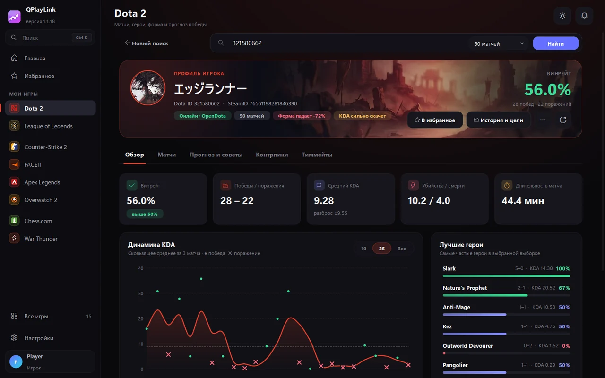
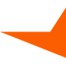
Поддерживаемые игры
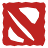
Dota 2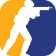
Counter-Strike 2 FACEIT League of Legends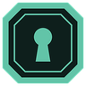
Deadlock Overwatch 2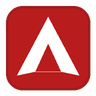
Apex Legends War Thunder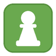
Chess.com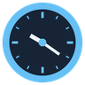
Steam Brawl Stars Genshin Impact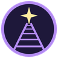
Honkai: Star Rail Zenless Zone Zero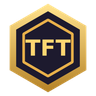
Teamfight TacticsНикаких настроек и ключей: программа сама подключается к официальным источникам данных.
Один файл, права администратора не нужны. Ярлык появится в «Пуске».
Ник и пароль или вход через Steam и Discord. Бесплатно, почта не обязательна.
Ник, Riot ID или ссылка на Steam — себя или друга. Статистика появится за секунды.
Поиск игрока Dota 2, разбор матча, контрпики, FACEIT и League of Legends.
Светлая и тёмная тема, новая страница CS2, Teamfight Tactics и подсказки после каждой игры.
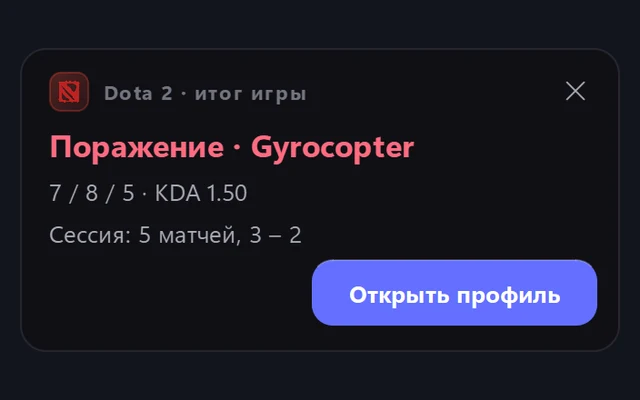
Карточка с главным за матч. После серии поражений программа мягко предложит сделать перерыв.
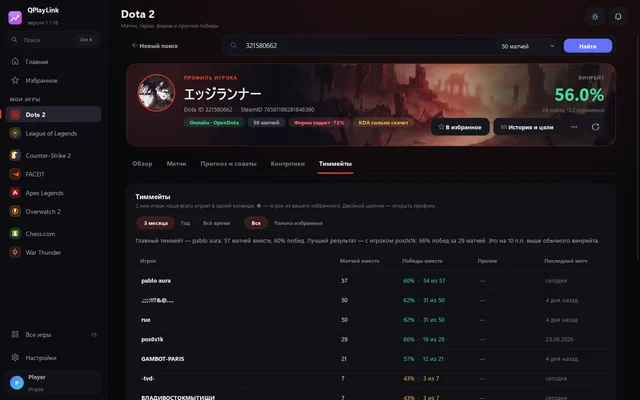
С кем вы чаще играете и с кем лучше выигрываете. Любимых можно отметить звёздочкой.
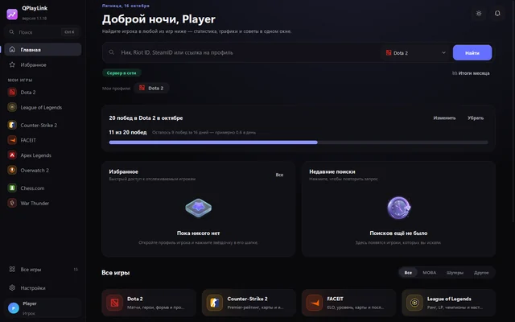
Поставьте цель на месяц, а в конце получите итоги: сколько сыграли и что выросло.
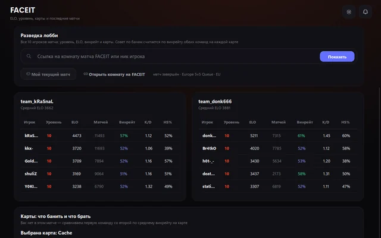
Перед матчем видно уровень, форму и любимые карты всех десяти игроков.
Ранг, последние игры, места и составы. Пятнадцатая игра в программе.
Напишите @QPlayLink_bot, например /faceit donk666 или /dota 321580662. Есть Dota 2, CS2, FACEIT, League of Legends и Chess.com.
Самое полезное из сайтов статистики — в одной программе, без вкладок и рекламы.
Нажмите на матч — и увидите всё, что важно: кто сколько нафармил, урон, предметы и как менялось золото.
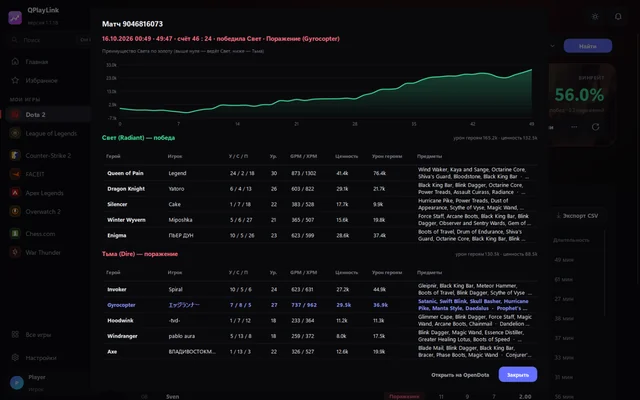
Отметьте героев врага — программа подскажет, кого брать против них, по свежей статистике матчей OpenDota.
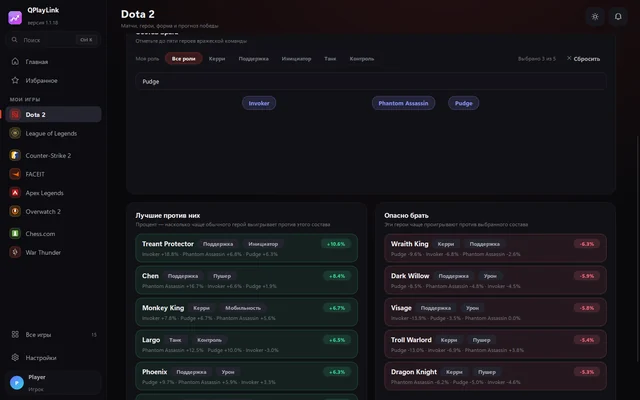
Рейтинг, сильные и слабые стороны, карты, матчи и тиммейты. Плюс официальный API FACEIT: уровень, ELO и форма.
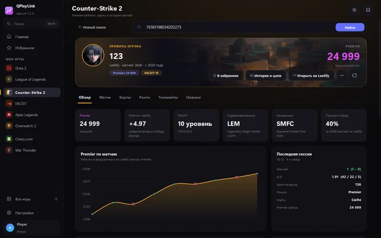
Официальный API Riot Games: ранг и LP, мастерство чемпионов, последние матчи с K/D/A и CS.
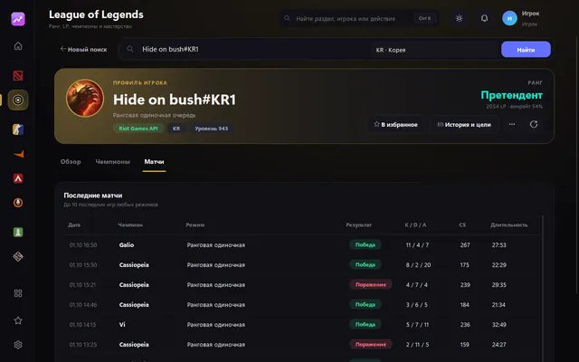
Программа живёт в трее и сама подсказывает, что изменилось.
График за месяц или год, пик и минимум. Поставьте цель — придёт уведомление, когда дойдёте.
Общая таблица рейтинга с друзьями и «лучший рост» недели. Вступление по коду.
Уведомление в программе и в Telegram, когда друг из избранного запускает игру.
Рейтинг избранных в маленьком окне — видно прямо из игры.
Запустили Dota 2 или CS2 — откроется ваш профиль, после игры статистика обновится сама.
Ваша статистика по ссылке — откройте с телефона или покажите друзьям.
QPlayLink только смотрит открытую статистику — как сайты статистики, но в одном окне.
Не читает память игр и не меняет их файлы. Античит (VAC, Vanguard, EAC) программа не затрагивает.
Пароли от Steam и игр не нужны. Steam привязывается через официальный вход Steam.
Данные — из официальных API: Riot Games, FACEIT, Steam, Supercell, OpenDota, Chess.com и других.
Это SmartScreen: он так предупреждает о любых новых программах без платной цифровой подписи. Нажмите «Подробнее» → «Выполнить в любом случае».
Да, полностью: без подписок, рекламы и платных функций.
Да, нужен бесплатный аккаунт QPlayLink — это минута: придумайте ник и пароль или войдите через Steam или Discord. Почта необязательна (пригодится, чтобы восстановить пароль). Аккаунт хранит избранное, группы друзей, цели и уведомления на всех ваших компьютерах.
Нет. Программа не взаимодействует с игрой: она показывает ту же открытую статистику, что и сайты вроде OpenDota или FACEIT, только в одном окне.
Никак — программа обновляется сама и скачивает только изменившиеся файлы.
Напишите Telegram-боту @QPlayLink_bot или в программе: «Настройки → Сообщить о проблеме». Ответ разработчика придёт туда же.
Скачайте, войдите и найдите себя или друга. Бесплатно и без рекламы.
Скачивать нужно на компьютере с Windows.